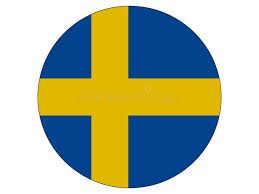

- В Швеції ~ 95 700 озер
- Швеція вступила в ООН в 1946 році
- В шведскій бібліотеці є книга біблія - майнкрафту вона є тільки в двох екземплярах одна в бібліотеці інша в офісі майнкрафту (моджанг) І НЕМАЄ електроного екземплюру
Це набільша країна межую з Фінляндією та Норвегією.
Колись тут жили вікінги це було приблизно 900 роки, але це всього лиш 1/100 частина всієї історії цієї країни. Але тоді ще тяжко було назвати це государством тому що основи були заожені тільки в 1523–1560 році (звісно ж нашої ери). І ще хотілось би додати що в кінцуі 19 століття ця країна була сама развита

Колись тут жили вікінги це було приблизно 900 роки, але це всього лиш 1/100 частина всієї історії цієї країни. Але тоді ще тяжко було назвати це государством тому що основи були заожені тільки в 1523–1560 році (звісно ж нашої ери). І ще хотілось би додати що в кінцуі 19 століття ця країна була сама развита